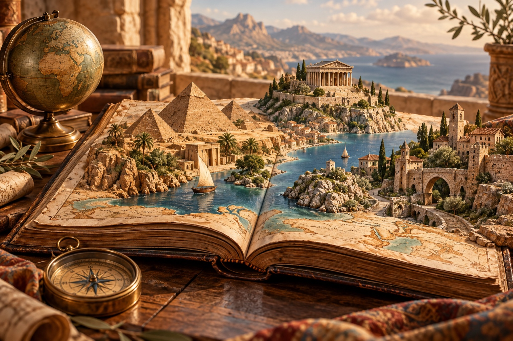

El món és un llibre.
Obrim-lo junts.
Des de les primeres estrelles fins als carrers d’avui. Tria una porta i deixa’t portar per la curiositat.

Les grans etapes de la història
Segueix la història en ordre cronològic: comença pels orígens i avança fins al present. Cada època té els seus volums. Aquesta divisió és una guia: les societats del món no van canviar totes al mateix temps.
Un món ple d’històries
Passa el cursor per una zona per descobrir-ne la història. Al mòbil, toca-la. Els colors t’ajuden a distingir els territoris; els marcadors obren històries de llocs concrets.
Viatja a un lloc
Formes del mapa: Natural Earth, domini públic. Els colors són decoratius. Els límits actuals no representen les fronteres històriques.
Tria un lloc al mapa
Toca un punt destacat o qualsevol zona del mapa. Començarem amb una introducció i anirem ampliant les històries locals.
La història, en veu alta
Escolta els relats amb la veu catalana del teu dispositiu, si està disponible.
Descobreix i juga
Petites preguntes per posar a prova la teva curiositat.
Sorprèn-me amb una història
Deixa que la biblioteca triï per tu.